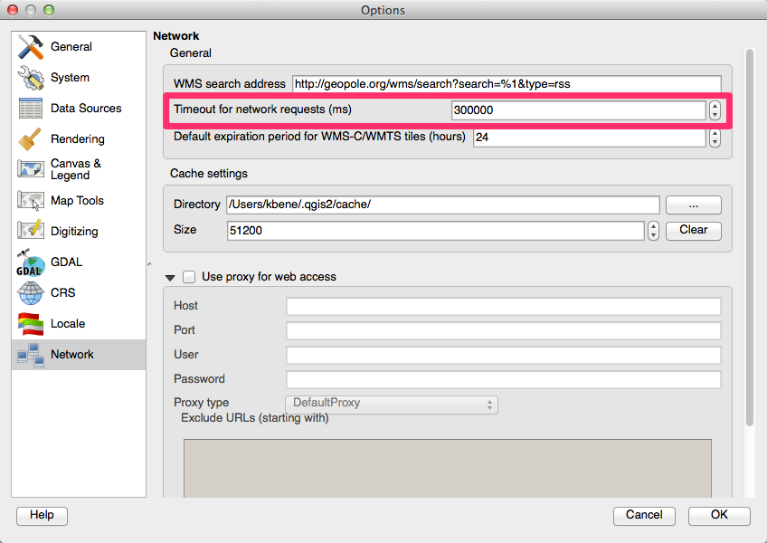
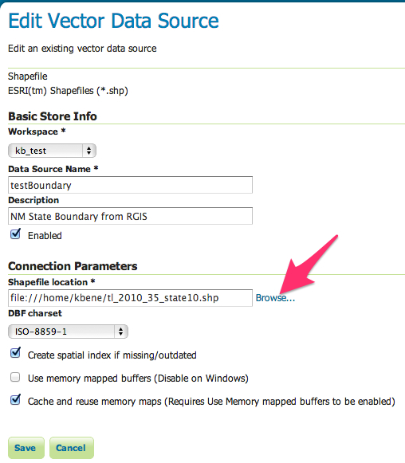
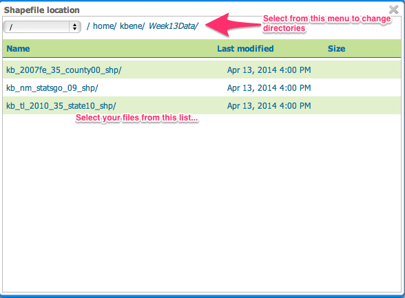

The GitHub home page from which you can start the sign-up process
These milestone assignments will be compiled into an online, web-based portfolio that you will develop over the course of the semester. This portfolio will include a "home page" (started in the second week's milestone) that includes links to all of the created milestone and "deep dive" pages that you will create.
Developing content to go onto the web has evolved from a solitary effort to one where teams work together in developing components of larger web sites. These teams need to have a variety of tools to enable their work. Some of the most important tools enable code sharing with the team, and in projects based on the Open Source software model the rest of the world. The GitHub web platform uses the Git distributed version control system to enable sharing of code and hosting static web pages based on that shared code.
We will be using GitHub as the platform for hosting your portfolios for the class, allowing you to learn how version control operates, and how to provide comments and keep notes on your work and the work of others (this will be part of our peer review process).
While the work we do this and next week will be directly through the editor integrated into the GitHub system, you will eventually want to install one of the recommended desktop applications that allow you to develop your web pages on your local computer and then update the files on the GitHub system when you want to create a new version. Also, you can't add things like images to your web pages until you are adding them to a local repository on your computer and then sending them to GitHub.
The GitHub home page from which you can start the sign-up process
You will then be taken to the "Welcome to GitHub" page where you can see that you have signed up for a free GitHub account.

The GitHub welcome page showing that you've successfully signed up and providing you the "Finish sign up" button to move to the next step in setting up your new account.
This takes you to your GitHub dashboard from which you can access all the information about your account. Feel free to review the GitHub Bootcamp materials that are highlighted on your home page.

Your GitHub "dashboard" - showing some orientation materials the first time you sign in and the "New repository" button you will use in Step 3 below.
Click the "Create repository" button near the lower right corner of your dashboard.
Fill out the information requested for the new repository and click the "Create repository" button near the bottom of the page.

The "create repository" form for entering information about the new repository that you are creating.

The setup page for the newly created respository - with the "Quick Setup" options and "README" file creation link.

Repository home page with "Create a new file here button" highlighted.

New File creation page with information to be entered highlighted.

Process for creating a new "gh-pages" branch from the default "master" branch.
Test to see if your new page is visible, and looks the way you expect by opening the web address for the page you have in your "gh-pages" branch. This web address is structured like this:
http://<your GitHub username>.github.io/<your repository name>/<the HTML file name>
For example: http://geog12345.github.io/geog485/helloworld.html

Sample "helloworld.html" web page display.
This week’s milestone activity takes you through the process of creating two more web pages in preparation for next week’s work with the Google Maps API in developing your first web mapping page. These pages will be:
Open the milestone assignment template linked above and select "view Source" from the browser's menu to view the source code for the file. Create a new document in your GitHub gh-pages branch named milestone_02.html, copy the page code from the "view source", and paste it into your milestone_02.html document. Add your responses to the following questions to the milestone_02.html document.
Open the home page template linked above in your web browser and select “view source” from the browser’s menu to examine the source code for the page.
Question 2 : How are the
<h1>and
<h2> elements from the source code displayed differently in the browser?
Log into your GitHub account, and create a new document in the gh-pages branch and name it index.html.
Copy the source code from the “view source” information for the web page you opened in 1) above and paste it into index.html document in the GitHub editor. Save your changes
Test your new page by trying the following web addresse (it may take a few minutes for your newly created page to become available):
http://<your GitHub username>.github.io/<your repository name>
http://<your GitHub username>.github.io/<your repository name>/index.htmlWhere <your GitHub username> is replaced by your username for GitHub, and <your repository name> is replaced with the name of the repository that you created your helloworld.html document in during last week's milestone exercise.
The reason that the first web address works (without specifying the file name) is that if a file name is not provided in a web address, many web servers will deliver a file named “index.html” if it is found in the requested directory.
Flesh out (using using the GitHub edit function) the index.html page that you created above with information specific to you based upon the content areas in the page. Add a link to your milestone_02.html file to the "milestones" section of your index.html page.
Make a copy of your index.html page by copying the content of the page and pasting it into a new document named index_styled.html.
Experiment with some of the styling capabilities described in Dave Raggett’s “Adding a Touch of Style” page (http://www.w3.org/MarkUp/Guide/Style.html) on index_styled.html page you created above. Make at least three stylistic changes to the index_styled.html page.
In preparation for creating a web page with an embedded Google Map you should first answer the following questions about what and how you want to map. As you define the type of map you want to build, think about a specific problem or topic that you would like to address with your map.
In this exercise you will be generating the configuration for the base map (i.e. The Google Maps background layers). In future assignments you will add your own custom content to free-standing web pages that include a mapper based upon the base map you define here.
Create a web page (based upon the assignment template) that contains your milestone writeup (including the embedded Google Map required by question 5), and link it to the home page (index.html) file you created last week.
Respond to Question 1-4 with an understanding that you are generating a web page that is publicly accessible, and should be both clear and complete.
What area do you want to depict in your map? Why?
What is the center point (latitude and longitude) of your area of interest?
What style of map (roads, satellite, hybrid, terrain) is appropriate for your map? Why?
What is the scale of your map (local, regional, continental, global)? How will this translate into your selection of an appropriate default zoom level for your map?
Now that you have answered these questions about the map that you want to create, refer to the examples in the lecture notes, the Google Maps Tutorial (http://code.google.com/apis/maps/documentation/javascript/tutorial.html), and this week's reading assignment to create a custom Google map.
Make a free-standing web page based upon the Google Map that you created as part of last week's lab assignment. Use the Google styled maps wizard to define at least three modified base map styles and integrate the JSON generated by the wizard into your new Google Map page.
This week's milestone concentrates on some command line tools that are useful in working with raster and vector data sets. These tools should be available on your personal computers (through the installation of the FW-Tools package for Windows (use the mirror site from the FW-Tools website to download the "FWTools247.exe" package to install on your system), or the GDAL, OGR, and Proj4 frameworks on the Mac)
Here are some useful links to documentation and information about the tools that you will be working with.
OGR in particular the OGR Utility Programs Documentation
GDAL in particular the GDAL Utility Programs Documentation
Download three data products from one or more of the following online data repositories.
Make sure to download at least one vector and one raster data product as part of the collection you download. If you need to go to different site(s) to download the data, feel free to do so.
Briefly describe each dataset based upon the information from the web site.
Examine each file using either gdalinfo or ogrinfo (depending upon whether it is a raster or vector data product), and answer the following questions about each data set:
What is the projection/coordinate system for the data product? If it is undefined, note it.
What is the spatial extent (i.e. bounding box) of the data product?
If it is a vector dataset, how many features does it have?
If it is a raster dataset, what is the pixel resolution (include units) of the dataset?
As with the previous milestones, please link your web page with your writeup from your homepage in GitHub.
There are a large number of WMS services available on the web. One way to find interesting services is to search for them using standard search engines such as Google. Try searching for the following search phrase:
“REQUEST=GetCapabilities” and “SERVICE=WMS”
as a single search phrase
What search engine did you use?
How many ‘hits’ did you get?
How useful (generally in terms of getting a pointers to live WMS services [defined as a functioning GetCapabilities request]) were the ‘hits’?
Pick two of the services that included live "GetCapabilities" requests that you found above, and answer the following questions about each.
How many layers are included in the service (including nesting layers)?
How many layers are included in the service (including nesting layers)?
What is the LatLonBoundingBox of the layer?
Open the following GetCapabilities request in your browser. Select “View Source” from the browser menu to see the delivered XML document (it may appear as an unformatted string of text by default in your browser - if that is the case, save the file to your hard drive and view it in a text editor). Use the information in the XML capabilities document to formulate GetMap requests for the following map images. Include the requests and resulting images in your write-up. Comment on anything unusual that you notice in the images that are returned.
Open the following (linked) KML file in Google Earth, uncompress it, and save the contained KML file on your computer. Open the KML file in a text editor (e.g. Text Wrangler [Mac], Notepad/Notepad++ [Windows]).
http://rgis.unm.edu/gstore/datasets/3f0a85aa-b7f8-47bd-8db6-1c0e66becf72/nm_state_bdy_00.derived.kml
Question 7 : Add a second Placemark element to the KML file that represents a square region that is completely contained within the state boundary. Save the KML file and open it in Google Earth (download from http://www.google.com/earth/index.html) or view it in Google Maps (by adding it to your GitHub gh-pages branch) as demonstrated in the lecture to verify that you have successfully created the file. Submit the KML file (as a link in your writeup) as part of your writeup for the milestone.
You might have noticed in the WMS requests that you generated in the previous lab returned images that didn’t look “quite right” relative to what you may know of the shape of familiar features.
For example, a WMS request for a 200x200 pixel PNG file for an area surrounding Bernalillo County (-107.2,34.7,-106,35.25) from the previous lab would be (link):
http://gstore.unm.edu/apps/rgis/datasets/92403ebf-aec5-404b-ae8a-6db41f388737/
services/ogc/wms?VERSION=1.1.1&SERVICE=WMS&REQUEST=GetMap&BBOX=-107.2,34.7,-106,35.25&
LAYERS=2007fe_35_county00&FORMAT=image/png&TRANSPARENT=TRUE&STYLES=&
SRS=EPSG:4326&WIDTH=200&HEIGHT=200
this request results in a map image that does not agree with the standard shape of Bernalillo county (depicted in the Google Map below) that we are accustomed to, regardless of the specific map projection being used.

This discrepancy is the result of a difference in the aspect ratio of the requested BBOX (-107.2,34.7,-106,35.25) and the requested image dimensions (200x200 pixels). When you compose a WMS GetMap request, you need to make sure that the aspect ratio of both the image size and BBOX match.
For example, if we calculate the aspect ratio of the BBOX we obtain the following values (remember that the BBOX is specified as a comma separated list of x,y coordinates: minx,miny,maxx,maxy):
BBOX width = (maxx) - (minx) = (-106) - (-107.2) = 1.2 degrees
BBOX height = (maxy) - (miny) = (35.25) - (34.7) = 0.55 degrees
BBOX aspect ratio = (BBOX width) / (BBOX height) = (1.2) / (0.55) = 2.1818If we want to retrieve a map image that is 200 pixels wide, we need to calculate an image height that yields an aspect ratio that matches the BBOX aspect ratio. Harking back to basic algebra:
width = 200
aspect ratio = width / height = 200 / height = 2.1818
height = (width) / (aspect ratio) = 200 / 2.1818 = 91.667So, if we request an image that is 200x92 (we have to request pixel dimensions in integers, so rounding to the nearest integer) we should get a representation that closely approximates the proper shape of features. The modified WMS request with the new images size is the following (link):
http://gstore.unm.edu/apps/rgis/datasets/92403ebf-aec5-404b-ae8a-6db41f388737/
services/ogc/wms?VERSION=1.1.1&SERVICE=WMS&REQUEST=GetMap&BBOX=-107.2,34.7,-106,35.25&
LAYERS=2007fe_35_county00&FORMAT=image/png&TRANSPARENT=TRUE&STYLES=&
SRS=EPSG:4326&WIDTH=200&HEIGHT=92
This process may be reversed to request images of a fixed size for use in a client interface, with the requested BBOX modified to match the aspect ratio of the target image. If, for example, images are being requested for a client interface with a fixed map size of 600x400 pixels, a corresponding BBOX can be derived using the same calculation.
If, for example, the area of interest for a map is 2 degrees wide, we can calculate the target height (in degrees) using the aspect ratio of the desired image.
image aspect ratio = (width) / (height) = (600) / (400) = 1.5
BBOX aspect ratio = (width) / (height) = (2) / (height in degrees) = 1.5
BBOX height = (width) / (BBOX aspect ratio) = (2) / (1.5) = 1.3333If our area of interest extends from -106 to -108 degrees East Longitude, we can use the known target height of 1.3333 to generate a WMS BBOX of the appropriate aspect ratio. If the minimum Latitude of interest is 34.7 degrees North Latitude, the maximum BBOX Y value would be
BBOX Max Y = (BBOX Min Y) + (BBOX height) = (34.7) + (1.3333) = 36.0333** these RGIS links are broken at the moment **
This set of calculations may be used to compose the following WMS request (link):
http://gstore.unm.edu/apps/rgis/datasets/92403ebf-aec5-404b-ae8a-6db41f388737/
services/ogc/wms?VERSION=1.1.1&SERVICE=WMS&REQUEST=GetMap&BBOX=-108,34.7,-106,36.0333&
LAYERS=2007fe_35_county00&FORMAT=image/png&TRANSPARENT=TRUE&STYLES=&
SRS=EPSG:4326&WIDTH=600&HEIGHT=400
Given that McKinley County NM is contained within the following BBOX: -109.5, 34.5, -106.5, 36.5
What is the aspect ratio of this geographic region?
What would be the height (in whole pixels) for a map image for this region that is 600 pixels wide?
Formulate a WMS request that reflects the values determined in 1.1 and 1.2 above for the WMS service used above in the examples. Include in your answer both the actual WMS request and the returned map image.
Formulate a WMS request for a 900x600 pixel map image that represents the full 3-degree width of the geographic region, and is based upon the minimum Y value of 34.5 degrees North Latitude. Include in your answer both the WMS request and the returned map image.
Given a WMS that is represented by the following GetCapabilities request, formulate individual GetMap requests using the following parameters:
BBOX=-106.639,35.074,-106.609,35.094 WIDTH=600 HEIGHT=400
for each of the following layers: 0 (TNM_Large_Scale_Imagery) and 1 (1_foot_imagery) - yes - USGS just gave numbers as the layer names
http://raster.nationalmap.gov/ArcGIS/services/TNM_Large_Scale_Imagery/
MapServer/WMSServer?request=GetCapabilities&service=WMS
Sometimes when WMS layers are accessed, there is a limit on the map scales for which the map image will be returned. If a request is submitted for a map scale that is outside the range specified for a given layer, typically, a blank map image will be returned.
You can effectively change the scale of a map image by changing the pixel dimensions of the requested image.
Following the model used in Milestone 3 for your first Google Map web page, you should first answer the following questions about what and how you want to map - relating to a different focus than you have used in your previous assignments. As you define the type of map you want to build, think about a specific problem or topic that you would like to address with your map.
In this exercise you will be generating the configuration for the base map (i.e. including one or more OpenLayer enabled background layers), adding controls, and defining an appropriate map center and zoom level for the map. You will add your own custom content (i.e. the answers to the following questions) to a free-standing web page that include an interactive mapper and the reasoning behind the design of the map.
Create a web page that contains your milestone assignment writeup (including the embedded OpenLayers map required by question 5), and link it to your home page (index.html).
Respond to Question 1-4 with an understanding that you are generating a web page that is publicly accessible, and should be, clear, complete, well-formatted, and reasonably styled.
Peer Review: This week's assignment will include a peer review component. Specifically, 1/3 of your 20-point peer-review score will be based upon your peer-review of two other web pages generated by the students in the class. The required peer-review will consist of two steps:
Create a new Discussion Item in Learn entitled: "Page for Peer-Review <Your Name>" at the same time you link your milestone to your homepage. Include in the post the web address of your web page that you created for this assignment.
Provide a substantive, constructive, and civil comment to two of the posted discussion items posted for peer-review. Please complete the peer-review as soon as possible so that your colleagues can benefit most from your input. Complete the peer-review no later than the required end-of-term portfolio review deadline. Think about the following ideas for your review: what did I learn from this page, what was done well, what could be improved
What area do you want to depict in your map? Why?
What is the center point (latitude and longitude) of your area of interest?
What base map(s) did you select for use in your map? Why?
What is the scale of your map (local, regional, continental, global)? How will this translate into your selection of an appropriate default zoom level for your map?
Now that you have answered these questions about the map that you want to create, refer to the examples in the lecture notes, the OpenLayers Examples (http://openlayers.org/dev/examples/), and this week's reading assignment to create a custom OpenLayers map.
Please create a new OpenLayers mapping page that is based upon the initial map (and thematic focus) that you created for last week's milestone, and add the following to your map:
Five Vector Features (based upon Point, LineString, or LinearRing Geometries), each assigned its own style.
One KML Layer, also styled.
One WMS Layer.
Peer Review: This week's assignment will include a peer review component. Specifically, 1/3 of your 20-point peer-review score will be based upon your peer-review of two other web pages generated by the students in the class. The required peer-review will consist of two steps:
Create a new Discussion Item in Learn entitled: "Page for Peer-Review <Your Name>" at the same time you link your milestone to your homepage. Include in the post the web address of your web page that you created for this assignment.
Provide a substantive, constructive, and civil comment to two of the posted discussion items posted for peer-review. Please complete the peer-review as soon as possible so that your colleagues can benefit most from your input. Complete the peer-review no later than the required end-of-term portfolio review deadline. Think about the following ideas for your review: what did I learn from this page, what was done well, what could be improved
Add three WMS layers to a new map project in QGIS, with one coming from each of the following collections of WMS services.
Some things to keep an eye out for:
GetCapabilities area of the service metadata provided as part of the GetCapabilities request.USGS's National Maps Service Endpoints Page: http://viewer.nationalmap.gov/example/services/serviceList.html
NRCS Soil Data Mart WMS Service: http://SDMDataAccess.nrcs.usda.gov/Spatial/SDM.wms?SERVICE=WMS&REQUEST=GetCapabilities
In your write-up include the names of the layers you added, which service they came from, and screen shots (one for for each of the added layers) showing each of them in the QGIS client interface.
Add three WFS layers to the same QGIS project, two based upon data available from the RGIS data browser (http://rgis.unm.edu/browsedata), and one based on the USGS GeoNames WFS service (http://services.nationalmap.gov/arcgis/services/WFS/geonames/MapServer/WFSServer?request=GetCapabilities&service=WFS. In RGIS you can see the available services for a specific data layer by
Selecting the collection you want to view by selecting from the directory tree on the left side of the page;
Identifying the data sets that have available OGC WMS and/or WFS services as indicated by the "Services" entry for each dataset, where the provided links are for the GetCapabilities requests for the provided services:

Important: Before adding the GeoNames layer, you may need to go into the preferences for QGIS and under the "Network" options increase the "Timeout for Network Requests(ms)" value to a larger number than the default 60000 (1 minute) (300000 worked for me for accessing the Historic and Administrative feature types). If you don't do this, QGIS might give up on the request before it has been fulfilled by the server.

In your write-up include the names of the layers you added, and the GetCapabilities requests related to those layers. Also include screen shots (again, one for each added layer) showing each layer in your QGIS project.
For the GeoServer portion of our work, you will be working on a Linux server that has been created for the class. While we won't be doing a lot of Linux work, some basic familiarity with moving around, copying files, and working with files is needed. The class server is running Ubuntu Linux which is a broadly deployed, well supported operating system and computing platform that has excellent support for many Open Source geospatial applications, including those that we will be using in this class.
The first set of exercises relate to learning some basics about working with the Linux Operating system, applicable just about any Linux server including the class server.
Review (but don't worry about memorizing) the following materials:
Webmonkey "Learn Just Enough Unix for Your Resume"
What command would you use to list the contents of a directory on a linux system?
What command would you use to read the "manual page" for a specific command?
Log into the class Linux server - geog485.unm.edu. This is different from the address referenced in the below linked videos The rest of the process is the same as demonstrated in the videos.
Windows: Open PuTTY on your computer and connect using the SSH protocol (see video demonstration)
Link to the YouTube video demonstration for Windows
Mac: Open the Terminal Application and connect using SSH (see video)
Link to the YouTube video demonstration for Mac OS X
Start a session on the class Linux server, which is located at at the hostname geog485.unm.edu (you will use your class server username and password to open the connection)
mkdir data command to create a directory called data in your home directory (the directory that you are in when you login, and where you go when you type the cd command with no options).
To add data to GeoServer you must have a file location on the server where data files must be stored and accessible by the GeoServer.
Change into the data directory that you created above using the cd data command.
Copy all of the data files located in the data directory in my Week13Data folder by executing the following command from inside your data directory.
cp -r /home/kbene/Week13Data/* .
This will place a copy of these data files in your data directory
Create a new store for each of the datasets added to your data directory above. Assign the new store to the workspace that is named based on your username (e.g. s_<your user name>. When specifying the the Connection Parameters for pointing to the file, the format is: file:/home/<your username>/data/<filename including any additional directories>
for example
file:/home/kbene/data/kb_world_8km.jpgYou can also browse to the by clicking on the "Browse ..." link next to the location field, for example for a shapefile:

and navigating to your home directory (/home/

Create a new layer for each of the stores added above. Here are some things to keep in mind:
You may need to designate the SRS for a layer if it can’t be read directly from the dataset. Your specify the designated SRS using the standard EPSG:XXXX format.
The EPSG code for GCS_North_American_1983 is EPSG:4269
This week's milestone provides an opportunity to experiment with vector layer styling. Please define two custom styles for each of the vector datasets that you added to GeoServer during last week's lab assignment. Take a screenshot of the layer preview for each of your styles - including the options tools above the OpenLayers preview displaying the name of the custom style that is being used for the current map display.
Include in your writeup the layer name, the name of the two custom styles and the associated screenshots for each of the vector datasets.
Please create a final OpenLayers mapping client that displays the GerServer-based Styled WMS layers that you created for Deep Dives 3 & 4, focusing on the goals that were laid out in Deep Dive 3. Include in your mapping client a narrative description (a paragraph or two, aimed at a novice user coming to your page for the first time) of the goals and data contained within the client.
Peer Review: This week's assignment will include a peer review component. Specifically, 1/3 of your 20-point peer-review score will be based upon your peer-review of two other web pages generated by the students in the class. The required peer-review will consist of two steps:
Create a new Discussion Item in Learn entitled: "Page for Peer-Review <Your Name>" at the same time you link your milestone to your homepage. Include in the post the web address of your web page that you created for this assignment.
Provide a substantive, constructive, and civil comment to two of the posted discussion items posted for peer-review. Please complete the peer-review as soon as possible so that your colleagues can benefit most from your input. Complete the peer-review no later than the required end-of-term portfolio review deadline. Think about the following ideas for your review: what did I learn from this page, what was done well, what could be improved